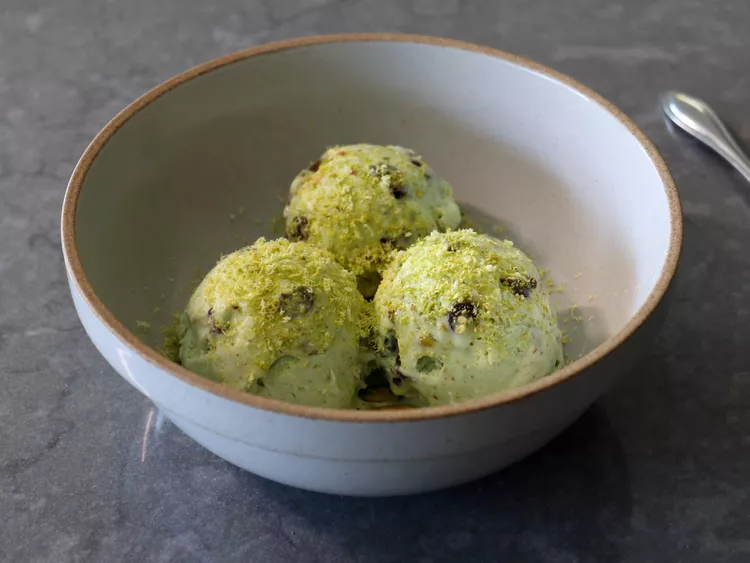

Pistachio Chip Ice Cream
This pistachio chip ice cream brings the flavors of the popular Dubai chocolate bar to a
no-churn ice cream. Studded with roasted, salted pistachios and dark chocolate chips, this recipe
is made with an easy milk syrup, invented by Chef John, instead of using the typical shortcut for no-churn desserts,
sweetened condensed milk. For best results, chill all of your tools, containers, and ingredients so that everything
stays cool.

Prep Time
- 15 Minutes
Cook Time
- 5 Minutes
Chill Time
- 2 Hours, 30 Minutes
Freeze Time
- 4 Hours
Total Time
- 6 Hours, 50 Minutes
Servings
- 4
Ingredients
- 3/4 cup white sugar
- 3/4 cup milk
- 1/3 cup pistachio butter
- 2 drops almond extract
- 1/4 teaspoon vanilla extract
- 1 drop green gel food coloring
- 2 cups heavy cream, ice cold
- 1/2 cup roasted salted pistachios, plus more for sprinkling
- 1/2 cup dark chocolate chips
Directions
- Combine sugar and milk in a saucepan and bring to a boil over medium-high heat, stirring occasionally. Boil mixture
for 3 minutes, then turn off the heat and pour into a bowl. Let cool to room temperature, about 30 minutes.
- Add pistachio butter, almond extract, vanilla extract, and green food coloring. Whisk together, then refrigerate
until completely chilled, about 2 hours.
- Pour very cold whipping cream into a large mixing bowl, and whisk until soft peaks form. Transfer in half the pistachio
mixture, and mix briefly to combine. Add remaining pistachio mixture and mix just until combined.
- Use a spatula to transfer the mixture into a frozen container. Sprinkle half the nuts and chocolate chips over the top, and
stir gently with a fork until distributed evenly. Scatter remaining chips and nuts over the top as evenly as possible.
- Place a piece of plastic wrap on top of the ice cream, cover with the lid, and transfer to a freezer until completely
frozen, at least 4 hours and preferably overnight.
- Scoop and serve sprinkled with chopped or grated pistachios.
Nutrition Facts! (per serving)
Calories
- 968
Fat
- 70g
Carbs
- 75g
Protein
- 16g
Back Home!